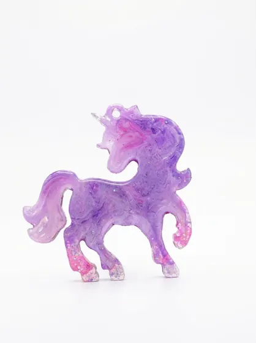
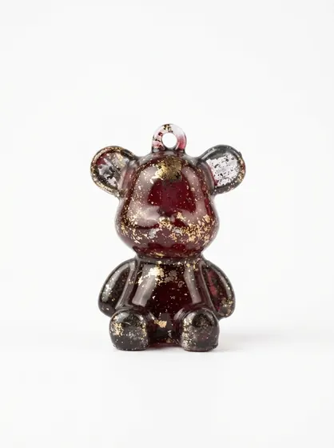
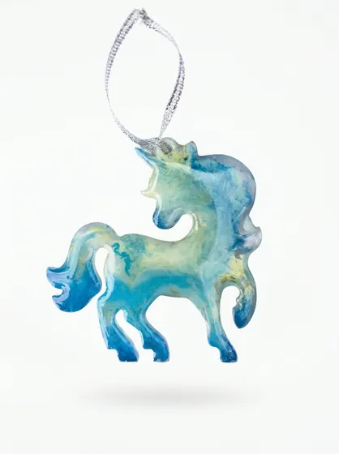
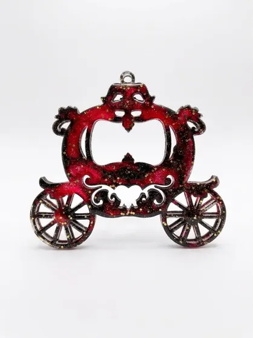
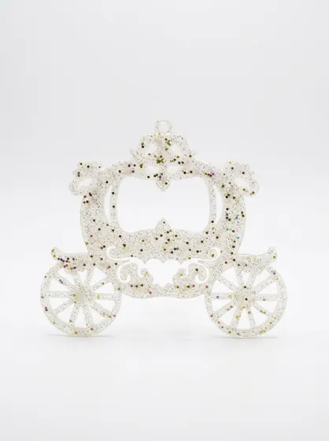
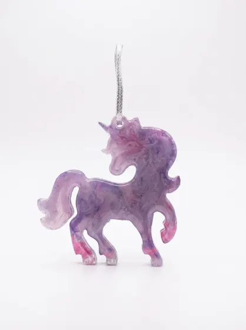
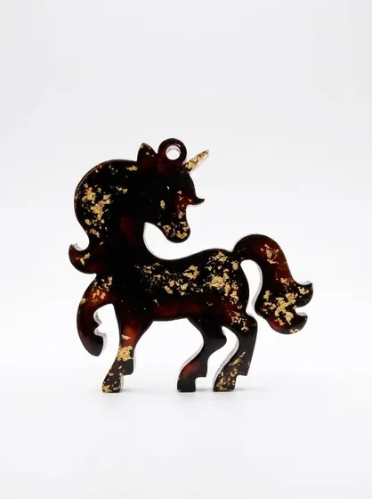

Ёлочные игрушки из эпоксидной смолы: чем они лучше обычных
Почему игрушки из эпоксидной смолы ручной работы становятся семейной реликвией: прочность, блеск, уникальный рисунок и как выбрать свою.
Читать · 4 минИдеи, советы и истории об изделиях из эпоксидной смолы.

Почему игрушки из эпоксидной смолы ручной работы становятся семейной реликвией: прочность, блеск, уникальный рисунок и как выбрать свою.
Читать · 4 мин
На что смотреть при выборе брелка из эпоксидной смолы: размер, крепление, цвет, качество шлифовки и как отличить ручную работу.
Читать · 4 мин
Простые правила ухода за украшениями и игрушками из эпоксидной смолы: чистка, хранение, чего избегать, чтобы сохранить блеск.
Читать · 3 мин
Идеи подарков из эпоксидной смолы на Новый год и другие праздники: ёлочные игрушки, брелки, наборы и индивидуальные заказы.
Читать · 4 мин
Этапы изготовления изделий из эпоксидной смолы вручную: форма, заливка, пигменты, глиттер, поталь, шлифовка и финишная обработка.
Читать · 5 мин
Как получаются цвета в эпоксидной смоле: пигменты, глиттер, золотая поталь и эффект глубины. Что можно заказать в нужном оттенке.
Читать · 4 мин
Как красиво украсить ёлку игрушками ручной работы из эпоксидной смолы: выбор палитры, расположение, сочетание со светом и шарами.
Читать · 4 мин
Сравнение изделий из эпоксидной смолы и стекла: вес, прочность, цена, дизайн и безопасность. Что лучше выбрать для украшений и игрушек.
Читать · 4 мин
Как заказать изделие из эпоксидной смолы на заказ: любой цвет, набор от 5 штук, свой эскиз. Сроки, этапы, как описать идею.
Читать · 4 мин
Чем ценны подарки ручной работы: индивидуальность, внимание к деталям, история изделия. Как выбрать подарок, который запомнят.
Читать · 3 мин